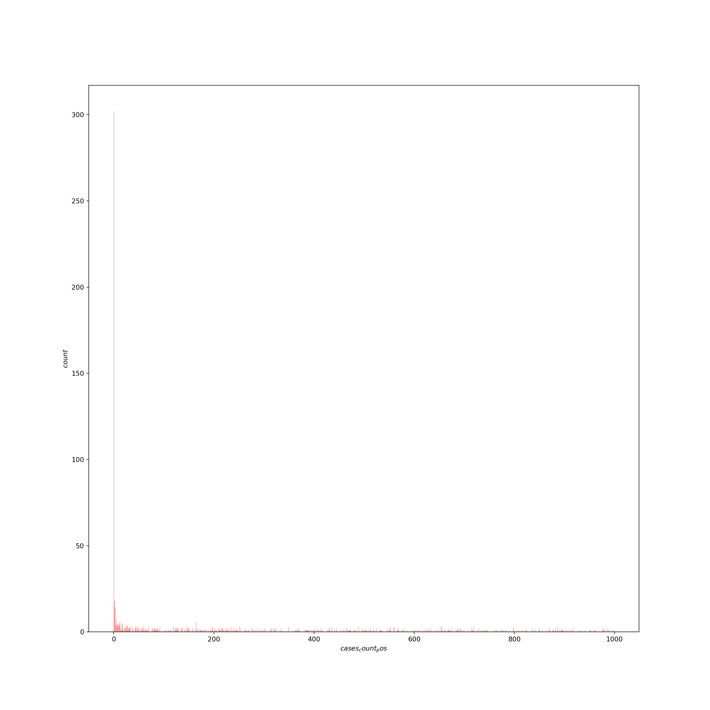
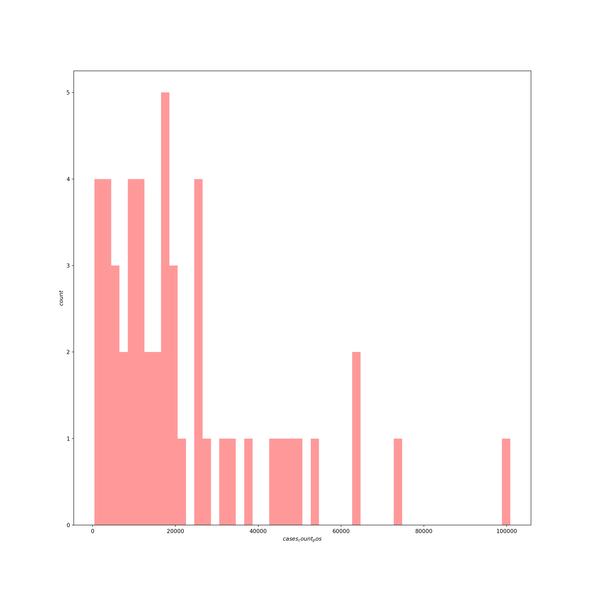
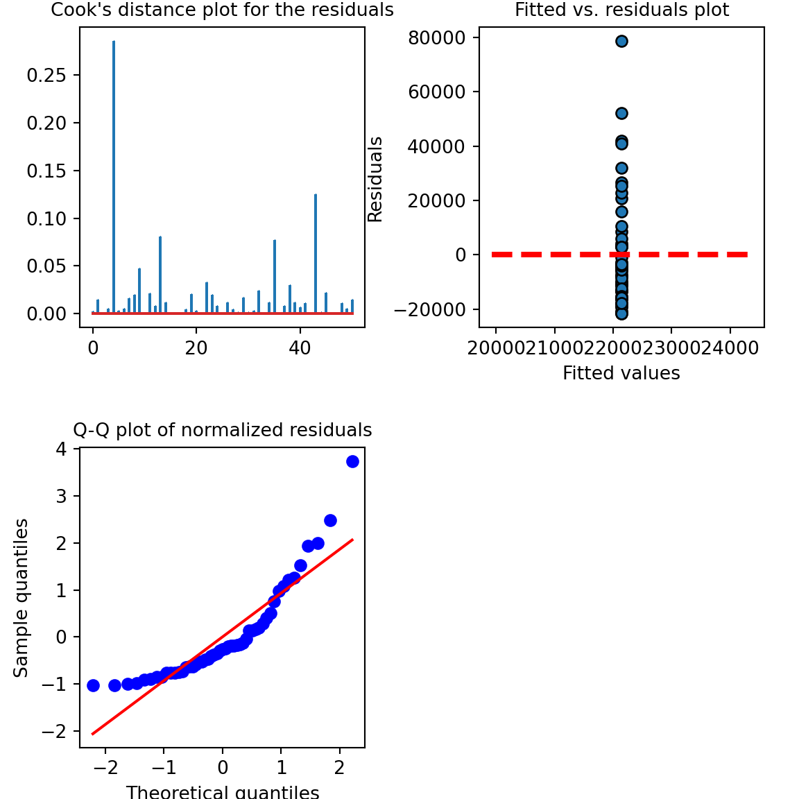
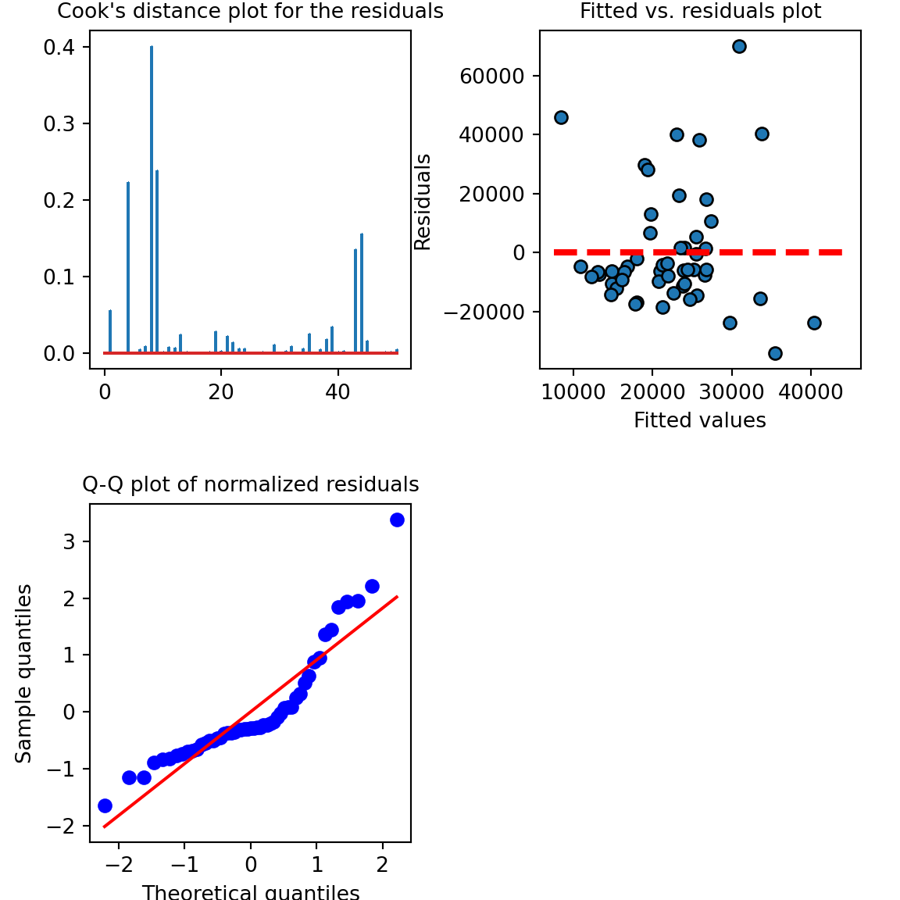
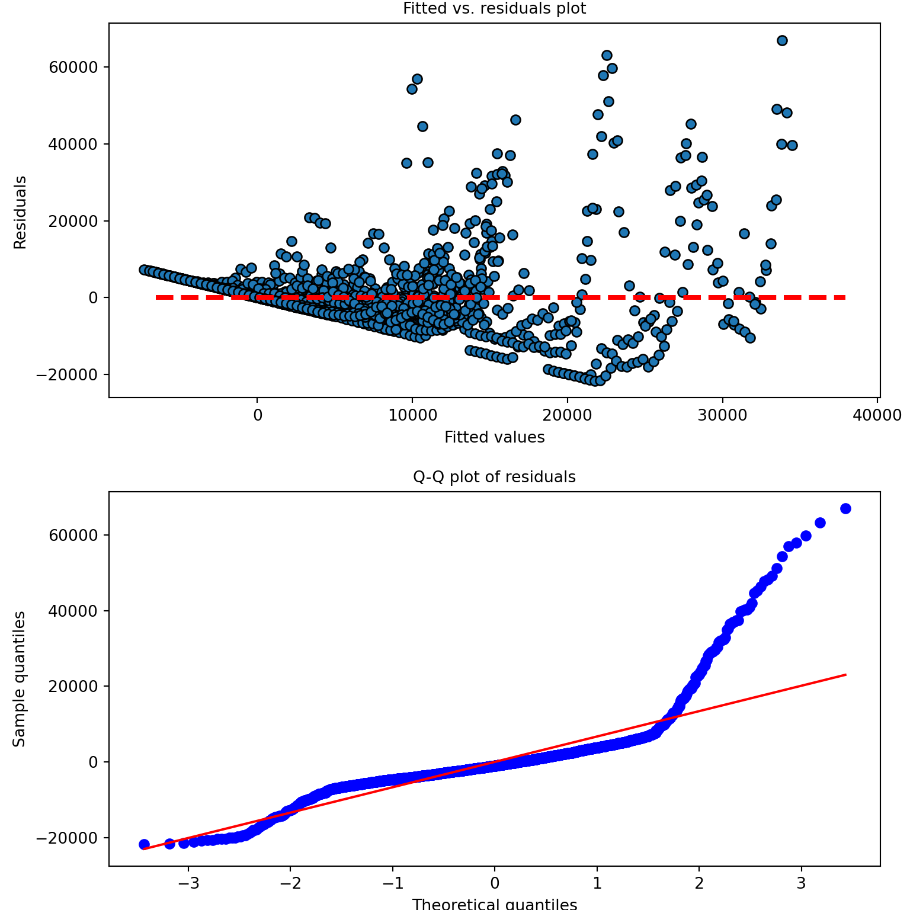
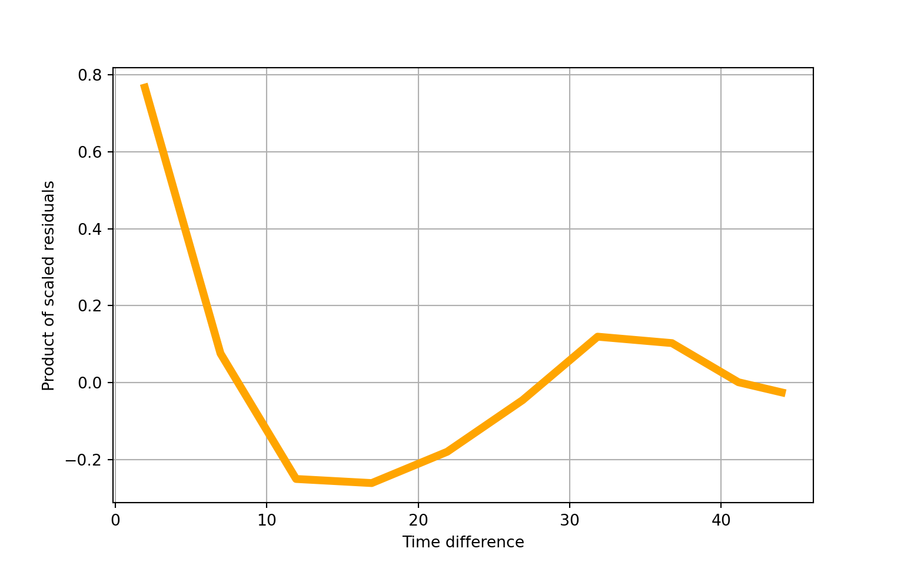
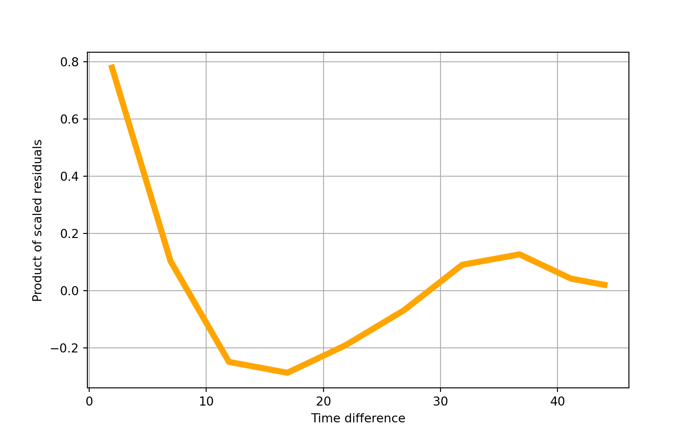
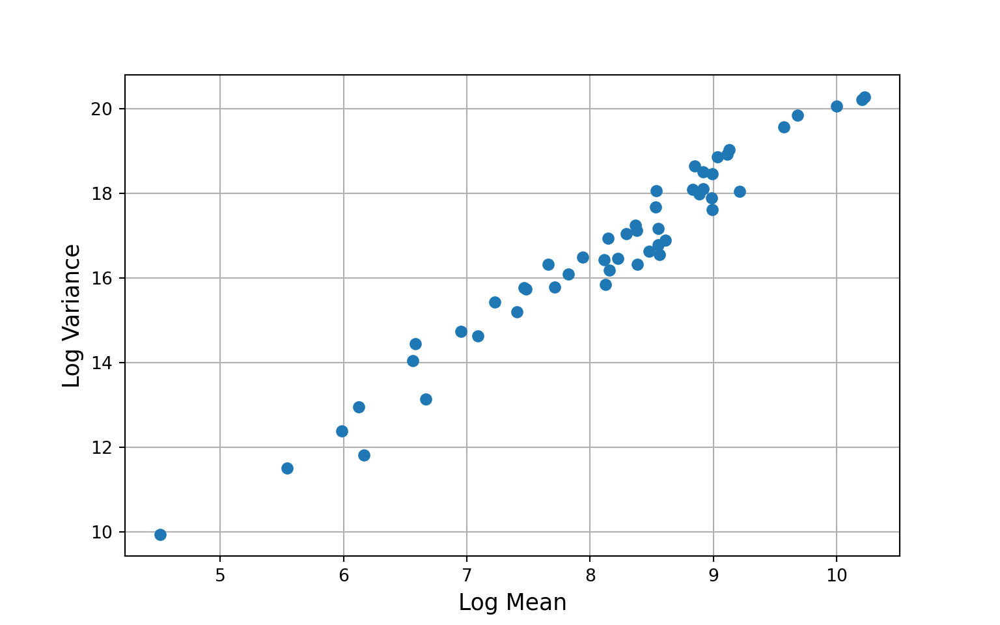

DAY 3: Data analysis (Python)
In this section, we will be exploring the relationships between COVID-19 cases and demographic data from the Census Bureau. If you did not complete the optional Census data section, you can still access these data by loading the following file:
# load data
US_cases_long_demogr_week = pd.read_csv('data_py/US_cases_long_demogr_week.csv')
del US_cases_long_demogr_week["Unnamed: 0"]
print(US_cases_long_demogr_week.head(20))## state week_of_year ... cases_count_pos cases_rate_100K
## 0 Alabama 4 ... 0.0 0.000000
## 1 Alabama 5 ... 0.0 0.000000
## 2 Alabama 6 ... 0.0 0.000000
## 3 Alabama 7 ... 0.0 0.000000
## 4 Alabama 8 ... 0.0 0.000000
## 5 Alabama 9 ... 0.0 0.000000
## 6 Alabama 10 ... 0.0 0.000000
## 7 Alabama 11 ... 23.0 0.469083
## 8 Alabama 12 ... 134.0 2.732917
## 9 Alabama 13 ... 673.0 13.725772
## 10 Alabama 14 ... 1010.0 20.598856
## 11 Alabama 15 ... 1743.0 35.548322
## 12 Alabama 16 ... 1320.0 26.921277
## 13 Alabama 17 ... 1518.0 30.959468
## 14 Alabama 18 ... 1467.0 29.919328
## 15 Alabama 19 ... 2001.0 40.810208
## 16 Alabama 20 ... 1882.0 38.383214
## 17 Alabama 21 ... 2707.0 55.209012
## 18 Alabama 22 ... 3474.0 70.851905
## 19 Alabama 23 ... 2548.0 51.966222
##
## [20 rows x 11 columns]## (2295, 11)Descriptives
It’s always a good idea to start data analysis by looking at some descriptive statistics of the sample data. Here, we can inspect the demographic data we accessed through the Census API:
US_cases_long_demogr_week_des = \
US_cases_long_demogr_week.groupby(['state'], \
as_index=False)['percent_age65over', 'percent_female', 'percent_white', 'percent_black'].mean()
print(US_cases_long_demogr_week_des)## state ... percent_black
## 0 Alabama ... 26.784447
## 1 Alaska ... 3.705582
## 2 Arizona ... 5.179443
## 3 Arkansas ... 15.675239
## 4 California ... 6.460677
## 5 Colorado ... 4.592657
## 6 Connecticut ... 12.189341
## 7 Delaware ... 23.162080
## 8 District of Columbia ... 45.977253
## 9 Florida ... 16.917588
## 10 Georgia ... 32.570493
## 11 Hawaii ... 2.186497
## 12 Idaho ... 0.914684
## 13 Illinois ... 14.619177
## 14 Indiana ... 9.946141
## 15 Iowa ... 4.060290
## 16 Kansas ... 6.134766
## 17 Kentucky ... 8.471502
## 18 Louisiana ... 32.798463
## 19 Maine ... 1.688052
## 20 Maryland ... 31.074172
## 21 Massachusetts ... 9.022876
## 22 Michigan ... 14.097428
## 23 Minnesota ... 7.013862
## 24 Mississippi ... 37.785709
## 25 Missouri ... 11.822200
## 26 Montana ... 0.597786
## 27 Nebraska ... 5.208984
## 28 Nevada ... 10.269058
## 29 New Hampshire ... 1.792366
## 30 New Jersey ... 15.057739
## 31 New Mexico ... 2.612135
## 32 New York ... 17.586102
## 33 North Carolina ... 22.221056
## 34 North Dakota ... 3.409696
## 35 Ohio ... 13.051219
## 36 Oklahoma ... 7.779157
## 37 Oregon ... 2.222519
## 38 Pennsylvania ... 12.030099
## 39 Rhode Island ... 8.505882
## 40 South Carolina ... 26.958518
## 41 South Dakota ... 2.298287
## 42 Tennessee ... 17.051272
## 43 Texas ... 12.895697
## 44 Utah ... 1.482771
## 45 Vermont ... 1.406115
## 46 Virginia ... 19.880584
## 47 Washington ... 4.358879
## 48 West Virginia ... 3.605173
## 49 Wisconsin ... 6.707556
## 50 Wyoming ... 1.290174
##
## [51 rows x 5 columns]Modeling
The data we have consists of counts of COVID-19 cases over time for each of 50 U.S. states and D.C. These data will be challenging to model, since we will have to deal with the following issues:
The response consists of counts with a huge number of zeros and an extended right tail. Typically, to model counts we’d use a poisson model. Here, the extended right tail suggests the data are overdispersed (i.e., the variance is greater than the mean), which would mean the restrictive assumptions of the poisson distribution are not met and may push us towards a quasi-poisson or negative binomial model. In addition, we may need some machinery in the model to deal with the excess of zeros (a zero-inflation component), since this is atypical for a poisson or negative binomial model. Let’s inspect the response variable:
## count 2295.000000 ## mean 5822.301961 ## std 10866.637622 ## min 0.000000 ## 25% 207.000000 ## 50% 2058.000000 ## 75% 6230.000000 ## max 100844.000000 ## Name: cases_count_pos, dtype: float64US_cases_long_demogr_week_filter = US_cases_long_demogr_week[US_cases_long_demogr_week.cases_count_pos < 1000] sns.distplot(US_cases_long_demogr_week_filter['cases_count_pos'], kde=False, color='red', bins=1000) plt.xlabel("$cases_count_pos$", fontsize=10) plt.ylabel("$count$", fontsize=10, rotation=90) plt.show()
- The data are inherently spatial in nature — in this case, at the state-level.
The data are inherently temporal in nature — in this case, at the daily- or weekly-level.
Cross-sectional models
Let’s start with something at the simpler end of the scale. We can reduce complexity by initially modeling a single time point (for example, the most recent week of case data), with a subset of states, and just a single predictor — the intercept — to estimate the average number of cases.
# filter the most recent week's data
US_cases_latest_week = US_cases_long_demogr_week[US_cases_long_demogr_week.week_of_year == max(US_cases_long_demogr_week.week_of_year)]
print(US_cases_latest_week.head(20))## state ... cases_rate_100K
## 44 Alabama ... 300.274210
## 89 Alaska ... 583.286059
## 134 Arizona ... 361.286199
## 179 Arkansas ... 366.955574
## 224 California ... 255.222289
## 269 Colorado ... 534.162358
## 314 Connecticut ... 311.671964
## 359 Delaware ... 353.576431
## 404 District of Columbia ... 183.776385
## 449 Florida ... 252.568508
## 494 Georgia ... 182.417146
## 539 Hawaii ... 44.001153
## 584 Idaho ... 493.714554
## 629 Illinois ... 505.728419
## 674 Indiana ... 564.538973
## 719 Iowa ... 539.639374
## 764 Kansas ... 612.601319
## 809 Kentucky ... 423.979105
## 854 Louisiana ... 259.271544
## 899 Maine ... 85.477588
##
## [20 rows x 11 columns]Now let’s inspect the response variable for just this last week of data:
# histogram of last week's counts
sns.distplot(US_cases_latest_week['cases_count_pos'], kde=False, color='red', bins=50)
plt.xlabel("$cases_count_pos$", fontsize=10)
plt.ylabel("$count$", fontsize=10, rotation=90)
plt.show()
# distribution of cases in sample
## count 51.000000
## mean 22147.000000
## std 21029.232446
## min 471.000000
## 25% 7720.000000
## 50% 16633.000000
## 75% 27210.500000
## max 100844.000000
## Name: cases_count_pos, dtype: float64Usually with count data, we’d fit a model designed to deal with the idiosyncrasies of counts — which are integer-only, lower bounded at zero, and generally heavily right skewed — such as a poisson, quasi-poisson, or negative binomial model. Here, however, the average number of counts is high and we don’t have any observations near the theoretical lower boundary of zero, so we can try a basic linear model since in this situation the Gaussian family of distributions approximates the poisson.
# fit intercept-only OLS model
US_cases_latest_week['intercept'] = 1
Y = US_cases_latest_week['cases_count_pos']
X = US_cases_latest_week['intercept']
model_last_week1 = sm.OLS(Y,X)
results = model_last_week1.fit()
print(results.summary())## OLS Regression Results
## ==============================================================================
## Dep. Variable: cases_count_pos R-squared: 0.000
## Model: OLS Adj. R-squared: 0.000
## Method: Least Squares F-statistic: nan
## Date: Wed, 16 Dec 2020 Prob (F-statistic): nan
## Time: 16:12:41 Log-Likelihood: -579.50
## No. Observations: 51 AIC: 1161.
## Df Residuals: 50 BIC: 1163.
## Df Model: 0
## Covariance Type: nonrobust
## ==============================================================================
## coef std err t P>|t| [0.025 0.975]
## ------------------------------------------------------------------------------
## intercept 2.215e+04 2944.682 7.521 0.000 1.62e+04 2.81e+04
## ==============================================================================
## Omnibus: 25.435 Durbin-Watson: 2.060
## Prob(Omnibus): 0.000 Jarque-Bera (JB): 40.572
## Skew: 1.664 Prob(JB): 1.55e-09
## Kurtosis: 5.830 Cond. No. 1.00
## ==============================================================================
##
## Notes:
## [1] Standard Errors assume that the covariance matrix of the errors is correctly specified.## 0 1
## intercept 16232.433072 28061.566928Let’s look at the model diagnostics:
# model diagnostics
fig, axs = plt.subplots(2, 2, squeeze=False, figsize=(6, 6))
fig.tight_layout()
fig.delaxes(axs[1, 1])
axs[0,1].scatter(x=results.fittedvalues,y=results.resid,edgecolor='k')
xmin = min(results.fittedvalues)
xmax = max(results.fittedvalues)
axs[0,1].hlines(y=0,xmin=xmin*0.9,xmax=xmax*1.1,color='red',linestyle='--',lw=3)
axs[0,1].set_xlabel("Fitted values",fontsize=10)
axs[0,1].set_ylabel("Residuals",fontsize=10)
axs[0,1].set_title("Fitted vs. residuals plot",fontsize=10)
stats.probplot(results.resid_pearson, plot=plt, fit=True)## ((array([-2.21154155, -1.84175131, -1.62365924, -1.46329903, -1.33363779,
## -1.22318558, -1.1259265 , -1.03829303, -0.95798431, -0.88342315,
## -0.81347686, -0.74730127, -0.68424773, -0.62380483, -0.5655602 ,
## -0.50917466, -0.45436405, -0.40088629, -0.34853176, -0.29711609,
## -0.24647455, -0.19645772, -0.14692788, -0.09775611, -0.0488197 ,
## 0. , 0.0488197 , 0.09775611, 0.14692788, 0.19645772,
## 0.24647455, 0.29711609, 0.34853176, 0.40088629, 0.45436405,
## 0.50917466, 0.5655602 , 0.62380483, 0.68424773, 0.74730127,
## 0.81347686, 0.88342315, 0.95798431, 1.03829303, 1.1259265 ,
## 1.22318558, 1.33363779, 1.46329903, 1.62365924, 1.84175131,
## 2.21154155]), array([-1.03075564, -1.02352761, -0.99851481, -0.99147699, -0.91610571,
## -0.88942856, -0.85024501, -0.84772471, -0.7700709 , -0.76902474,
## -0.76208202, -0.74315599, -0.72812929, -0.64396074, -0.63359421,
## -0.627555 , -0.58551828, -0.52655274, -0.52474573, -0.4799985 ,
## -0.46325989, -0.41019091, -0.37576264, -0.35303238, -0.28926401,
## -0.26220643, -0.24351816, -0.20447727, -0.19178066, -0.19025897,
## -0.16724338, -0.15240689, -0.13214938, -0.04431926, 0.13357596,
## 0.14237324, 0.16724338, 0.19734434, 0.2842234 , 0.40962028,
## 0.50734139, 0.7541407 , 0.98282237, 1.085061 , 1.21031522,
## 1.26566674, 1.52639903, 1.94329489, 1.99427155, 2.47607706,
## 3.74226688])), (0.9321886416156772, 3.0402711516827844e-16, 0.9085011845308415))axs[1,0].set_xlabel("Theoretical quantiles",fontsize=10)
axs[1,0].set_ylabel("Sample quantiles",fontsize=10)
axs[1,0].set_title("Q-Q plot of normalized residuals",fontsize=10)
inf=influence(results)
(c, p) = inf.cooks_distance
axs[0,0].stem(np.arange(len(c)), c, markerfmt=",")## <StemContainer object of 3 artists>axs[0,0].set_title("Cook's distance plot for the residuals",fontsize=10)
plt.subplots_adjust(left=0.1, wspace=0.4, hspace=0.4)
plt.show()
We recovered the average number of cases for the latest week, pooled over all the states. Now we can try adding some of our explanatory variables.
# fit OLS model with explanatory variables
X = US_cases_latest_week[['percent_age65over', 'percent_female', 'percent_black']]
Y = US_cases_latest_week['cases_count_pos']
X = sm.add_constant(X)
model_last_week2 = sm.OLS(Y,X)
results2 = model_last_week2.fit()
print(results2.summary())## OLS Regression Results
## ==============================================================================
## Dep. Variable: cases_count_pos R-squared: 0.094
## Model: OLS Adj. R-squared: 0.036
## Method: Least Squares F-statistic: 1.621
## Date: Wed, 16 Dec 2020 Prob (F-statistic): 0.197
## Time: 16:12:41 Log-Likelihood: -576.99
## No. Observations: 51 AIC: 1162.
## Df Residuals: 47 BIC: 1170.
## Df Model: 3
## Covariance Type: nonrobust
## =====================================================================================
## coef std err t P>|t| [0.025 0.975]
## -------------------------------------------------------------------------------------
## const -4.659e+05 3.02e+05 -1.541 0.130 -1.07e+06 1.42e+05
## percent_age65over -3865.7029 1836.319 -2.105 0.041 -7559.900 -171.505
## percent_female 1.111e+04 6406.308 1.735 0.089 -1773.124 2.4e+04
## percent_black -764.2939 504.074 -1.516 0.136 -1778.361 249.773
## ==============================================================================
## Omnibus: 20.527 Durbin-Watson: 2.318
## Prob(Omnibus): 0.000 Jarque-Bera (JB): 27.472
## Skew: 1.462 Prob(JB): 1.08e-06
## Kurtosis: 5.092 Cond. No. 5.72e+03
## ==============================================================================
##
## Notes:
## [1] Standard Errors assume that the covariance matrix of the errors is correctly specified.
## [2] The condition number is large, 5.72e+03. This might indicate that there are
## strong multicollinearity or other numerical problems.Let’s look at the model diagnostics:
# model diagnostics
fig, axs = plt.subplots(2, 2, squeeze=False, figsize=(6, 6))
fig.tight_layout()
fig.delaxes(axs[1, 1])
axs[0,1].scatter(x=results2.fittedvalues,y=results2.resid,edgecolor='k')
xmin = min(results2.fittedvalues)
xmax = max(results2.fittedvalues)
axs[0,1].hlines(y=0,xmin=xmin*0.9,xmax=xmax*1.1,color='red',linestyle='--',lw=3)
axs[0,1].set_xlabel("Fitted values",fontsize=10)
axs[0,1].set_ylabel("Residuals",fontsize=10)
axs[0,1].set_title("Fitted vs. residuals plot",fontsize=10)
stats.probplot(results2.resid_pearson, plot=plt, fit=True)## ((array([-2.21154155, -1.84175131, -1.62365924, -1.46329903, -1.33363779,
## -1.22318558, -1.1259265 , -1.03829303, -0.95798431, -0.88342315,
## -0.81347686, -0.74730127, -0.68424773, -0.62380483, -0.5655602 ,
## -0.50917466, -0.45436405, -0.40088629, -0.34853176, -0.29711609,
## -0.24647455, -0.19645772, -0.14692788, -0.09775611, -0.0488197 ,
## 0. , 0.0488197 , 0.09775611, 0.14692788, 0.19645772,
## 0.24647455, 0.29711609, 0.34853176, 0.40088629, 0.45436405,
## 0.50917466, 0.5655602 , 0.62380483, 0.68424773, 0.74730127,
## 0.81347686, 0.88342315, 0.95798431, 1.03829303, 1.1259265 ,
## 1.22318558, 1.33363779, 1.46329903, 1.62365924, 1.84175131,
## 2.21154155]), array([-1.65253149, -1.15171007, -1.15136638, -0.88745662, -0.83968806,
## -0.81798463, -0.77035518, -0.74767218, -0.70260376, -0.68411567,
## -0.66412683, -0.58215749, -0.55216123, -0.50982097, -0.50772736,
## -0.46892188, -0.44930698, -0.38593231, -0.37444205, -0.36790381,
## -0.35316036, -0.31657762, -0.31503715, -0.30046222, -0.29987997,
## -0.29341457, -0.28214219, -0.27893446, -0.27089349, -0.23078865,
## -0.22888131, -0.20298685, -0.17918033, -0.09309308, -0.02355087,
## 0.07163161, 0.07917909, 0.07978128, 0.25513112, 0.31931877,
## 0.51358473, 0.63018409, 0.88017482, 0.94426812, 1.36938364,
## 1.44044217, 1.85024983, 1.93863191, 1.95721227, 2.21881067,
## 3.38898395])), (0.9133672320998864, -3.5166749065205114e-16, 0.9181279129299906))axs[1,0].set_xlabel("Theoretical quantiles",fontsize=10)
axs[1,0].set_ylabel("Sample quantiles",fontsize=10)
axs[1,0].set_title("Q-Q plot of normalized residuals",fontsize=10)
inf=influence(results2)
(c, p) = inf.cooks_distance
axs[0,0].stem(np.arange(len(c)), c, markerfmt=",")## <StemContainer object of 3 artists>axs[0,0].set_title("Cook's distance plot for the residuals",fontsize=10)
plt.subplots_adjust(left=0.1, wspace=0.4, hspace=0.4)
plt.show()
We’re not able to detect any effects of interest here — perhaps because we’re only using one week of data. We actually have a year’s worth of data, so let’s try modeling this as a panel (a longitudinal dataset).
Panel models
We have case count data for each state, tracked at the weekly-level for a year. This means that the data are clustered at the state-level (i.e., observations within states are likely to be correlated with one another more than observations between different states). We could deal with this clustering in several different ways, but using a multi-level model with random intercepts grouped by state is a good, flexible option. Let’s start with a linear model.
# linear mixed effects with random intercepts for states
model_panel1 = smf.mixedlm("cases_count_pos ~ week_of_year + percent_age65over + percent_female + percent_black", US_cases_long_demogr_week, groups="state")
model_panel1_results = model_panel1.fit(reml=False)
print(model_panel1_results.summary())## Mixed Linear Model Regression Results
## ===========================================================================
## Model: MixedLM Dependent Variable: cases_count_pos
## No. Observations: 2295 Method: ML
## No. Groups: 51 Scale: 62845260.0324
## Min. group size: 45 Log-Likelihood: -23942.2208
## Max. group size: 45 Converged: Yes
## Mean group size: 45.0
## ---------------------------------------------------------------------------
## Coef. Std.Err. z P>|z| [0.025 0.975]
## ---------------------------------------------------------------------------
## Intercept -113674.192 84765.869 -1.341 0.180 -279812.243 52463.858
## week_of_year 343.037 12.742 26.922 0.000 318.064 368.011
## percent_age65over -960.246 514.813 -1.865 0.062 -1969.262 48.770
## percent_female 2529.750 1796.013 1.409 0.159 -990.372 6049.872
## percent_black -102.852 141.318 -0.728 0.467 -379.829 174.126
## state Var 32111710.625 846.529
## ===========================================================================## 0 1
## Intercept -279812.243024 52463.858344
## week_of_year 318.063804 368.010685
## percent_age65over -1969.261801 48.769952
## percent_female -990.371764 6049.871748
## percent_black -379.829262 174.125712
## state Var 0.301672 0.720257Let’s look at the model diagnostics:
# model diagnostics
fig, axs = plt.subplots(2, 1, squeeze=False, figsize=(8, 8))
fig.tight_layout()
axs[0,0].scatter(x=model_panel1_results.fittedvalues,y=model_panel1_results.resid,edgecolor='k')
xmin = min(model_panel1_results.fittedvalues)
xmax = max(model_panel1_results.fittedvalues)
axs[0,0].hlines(y=0,xmin=xmin*0.9,xmax=xmax*1.1,color='red',linestyle='--',lw=3)
axs[0,0].set_xlabel("Fitted values",fontsize=10)
axs[0,0].set_ylabel("Residuals",fontsize=10)
axs[0,0].set_title("Fitted vs. residuals plot",fontsize=10)
stats.probplot(model_panel1_results.resid, plot=plt, fit=True)## ((array([-3.4298304 , -3.18133149, -3.04364356, ..., 3.04364356,
## 3.18133149, 3.4298304 ]), array([-21724.68864953, -21565.7258941 , -21426.65140496, ...,
## 59822.63271488, 63227.66995944, 67010.32134171])), (6710.889431080678, 2.78148511566632e-11, 0.8545500284943002))axs[1,0].set_xlabel("Theoretical quantiles",fontsize=10)
axs[1,0].set_ylabel("Sample quantiles",fontsize=10)
axs[1,0].set_title("Q-Q plot of residuals",fontsize=10)
plt.subplots_adjust(left=0.12, hspace=0.25)
plt.show()
The model diagnostics look terrible here — why do you think that is? Now that we have a full year’s worth of data, for many states the earlier part of that year consisted of a very small number of cases — often zero cases.
# provides a summary of the number of zeros
print(US_cases_long_demogr_week['cases_count_pos'].describe())## count 2295.000000
## mean 5822.301961
## std 10866.637622
## min 0.000000
## 25% 207.000000
## 50% 2058.000000
## 75% 6230.000000
## max 100844.000000
## Name: cases_count_pos, dtype: float64## 0.0 302
## 1.0 18
## 2.0 14
## 4.0 8
## 164.0 6
## ...
## 6432.0 1
## 1880.0 1
## 330.0 1
## 5088.0 1
## 6628.0 1
## Name: cases_count_pos, Length: 1703, dtype: int64count_total = sum(US_cases_long_demogr_week['cases_count_pos'].value_counts().to_dict().values())
count_zero = US_cases_long_demogr_week['cases_count_pos'].value_counts()[0.0]
print("Count of zero is {}, about {:.4f} of the data.".format(count_zero, count_zero / count_total ))## Count of zero is 302, about 0.1316 of the data.About 15% of the data are zeros. This makes the linear model a poor fit for these data. Let’s try a model designed specifically for count data — the poisson. To account for the fact that states have different population levels, we can include an exposure term using the offset argument to get counts per population unit:
# Generalized Estimating Equations: poisson model
poi=Poisson()
ar=Autoregressive()
gee_model1 = GEE.from_formula("cases_count_pos ~ week_of_year + percent_age65over + percent_female + percent_black", groups="state", \
data=US_cases_long_demogr_week, \
time='week_of_year', \
cov_struct=ar, \
family=poi, \
offset=np.log(np.asarray(US_cases_long_demogr_week["pop_count_2019"])))
gee_model1_results = gee_model1.fit(maxiter=200)## /opt/anaconda3/envs/datafest/lib/python3.7/site-packages/statsmodels/genmod/generalized_estimating_equations.py:1252: IterationLimitWarning: Iteration limit reached prior to convergence
## IterationLimitWarning)## GEE Regression Results
## ===================================================================================
## Dep. Variable: cases_count_pos No. Observations: 2295
## Model: GEE No. clusters: 51
## Method: Generalized Min. cluster size: 45
## Estimating Equations Max. cluster size: 45
## Family: Poisson Mean cluster size: 45.0
## Dependence structure: Autoregressive Num. iterations: 200
## Date: Wed, 16 Dec 2020 Scale: 1.000
## Covariance type: robust Time: 16:13:35
## =====================================================================================
## coef std err z P>|z| [0.025 0.975]
## -------------------------------------------------------------------------------------
## Intercept 9.7617 6.996 1.395 0.163 -3.950 23.473
## week_of_year 0.0714 0.006 12.025 0.000 0.060 0.083
## percent_age65over 0.0511 0.025 2.071 0.038 0.003 0.099
## percent_female -0.3960 0.145 -2.724 0.006 -0.681 -0.111
## percent_black 0.0154 0.010 1.521 0.128 -0.004 0.035
## ==============================================================================
## Skew: 1.9152 Kurtosis: 23.2141
## Centered skew: 2.4730 Centered kurtosis: 22.7322
## ==============================================================================## Autoregressive(1) dependence parameter: 0.768## scale=1.00We detect quite a lot of autocorrelation (\(\rho\) = 0.768), which we might expect given that COVID-19 cases tend to manifest in waves over time.
We also get a warning message: IterationLimitWarning: Iteration limit reached prior to convergence, but even if we specify a large value for maxiter (e.g., 2000) we still don’t achieve convergence. We could try specifying starting values, estimated using a simpler covariance structure, to try to get the estimating algorithm to converge. But, the lack of convergence may be a symptom of a more fundamental problem — that the data do not meet the restrictive assumptions of the poisson model (that the variance is equal to the mean). Based on the histogram we made of the marginal counts, this seems likely. In which case, we may need a more flexible model.
Let’s look at some model diagnostics anyway:
# plot within-group residuals against time difference
fig = gee_model1_results.plot_isotropic_dependence()
plt.grid(True)
plt.show()
# plot mean-variance relationship without covariates
yg = gee_model1.cluster_list(np.asarray(US_cases_long_demogr_week["cases_count_pos"]))
ymn = [x.mean() for x in yg]
yva = [x.var() for x in yg]
plt.grid(True)
plt.plot(np.log(ymn), np.log(yva), 'o')
plt.xlabel("Log Mean", size=13)
plt.ylabel("Log Variance", size=13)
plt.show()
Overall, the poisson model does a much better job of capturing the idiosyncrasies of our data than the linear model. We can go further, however, by fitting a negative binomial model that can account for over- or under-dispersion (variance greater than or less than the mean).
# Generalized Estimating Equations: negative binomial model
nb = NegativeBinomial(alpha=1.)
ar = Autoregressive()
gee_model2 = GEE.from_formula("cases_count_pos ~ week_of_year + percent_age65over + percent_female + percent_black", groups="state", \
data=US_cases_long_demogr_week, \
time='week_of_year', \
cov_struct=ar, \
family=nb, \
offset=np.log(np.asarray(US_cases_long_demogr_week["pop_count_2019"])))
gee_model2_results = gee_model2.fit(maxiter=2000)
print(gee_model2_results.summary())## GEE Regression Results
## ===================================================================================
## Dep. Variable: cases_count_pos No. Observations: 2295
## Model: GEE No. clusters: 51
## Method: Generalized Min. cluster size: 45
## Estimating Equations Max. cluster size: 45
## Family: NegativeBinomial Mean cluster size: 45.0
## Dependence structure: Autoregressive Num. iterations: 52
## Date: Wed, 16 Dec 2020 Scale: 1.000
## Covariance type: robust Time: 16:13:49
## =====================================================================================
## coef std err z P>|z| [0.025 0.975]
## -------------------------------------------------------------------------------------
## Intercept 5.6206 4.490 1.252 0.211 -3.180 14.422
## week_of_year 0.0745 0.005 15.051 0.000 0.065 0.084
## percent_age65over 0.0321 0.019 1.707 0.088 -0.005 0.069
## percent_female -0.3092 0.093 -3.324 0.001 -0.492 -0.127
## percent_black 0.0135 0.007 2.042 0.041 0.001 0.026
## ==============================================================================
## Skew: 1.3220 Kurtosis: 23.3385
## Centered skew: 2.1260 Centered kurtosis: 22.5005
## ==============================================================================## Autoregressive(1) dependence parameter: 0.761## scale=1.00Let’s look at some model diagnostics:
# plot within-group residuals against time difference
fig = gee_model2_results.plot_isotropic_dependence()
plt.grid(True)
plt.show()
# plot mean-variance relationship without covariates
yg = gee_model2.cluster_list(np.asarray(US_cases_long_demogr_week["cases_count_pos"]))
ymn = [x.mean() for x in yg]
yva = [x.var() for x in yg]
plt.grid(True)
plt.plot(np.log(ymn), np.log(yva), 'o')
plt.xlabel("Log Mean", size=13)
plt.ylabel("Log Variance", size=13)
plt.show()
Let’s compare our last two models using the quasi information criterion (QIC):
# use quasi information criterion to compare poisson and negative binomial models
print(gee_model1_results.qic()) ## (6283477749.315451, 8011349.269636027)## (4709555305.822205, 6136.330127245823)Both count-based models improve upon the previous linear models, but the negative binomial model has the edge slightly with a lower QIC value. However, neither model is really satisfactory, probably because they cannot take account of the excessive zeros in the data and they only use cluster-robust standard errors and thus cannot model how lower level coefficients vary across groups of the higher level.
Python’s statsmodels has zero-inflated count model methods, but they cannot deal with panel/clustered data. However, we can fit generalized linear mixed effects models in a Bayesian framework using statsmodels. Initially, let’s try a model with random intercepts only:
# Bayesian poisson mixed effects model with random intercepts for states
formula = "cases_count_pos ~ week_of_year + percent_age65over + percent_female + percent_black"
po_bay_panel1 = PoissonBayesMixedGLM.from_formula(formula, {'state': '0 + C(state)'}, US_cases_long_demogr_week)
po_bay_panel1_results = po_bay_panel1.fit_map()
print(po_bay_panel1_results.summary()) ## Poisson Mixed GLM Results
## ================================================================
## Type Post. Mean Post. SD SD SD (LB) SD (UB)
## ----------------------------------------------------------------
## Intercept M -0.2003 1.8278
## week_of_year M 0.0674 0.0000
## percent_age65over M -0.1853 0.0845
## percent_female M 0.1826 0.0489
## percent_black M 0.0090 0.0159
## state V 0.0925 0.0985 1.097 0.901 1.336
## ================================================================
## Parameter types are mean structure (M) and variance structure
## (V)
## Variance parameters are modeled as log standard deviationsWe can also add random slopes for time to allow for different trajectories of case rates across states:
# Bayesian poisson mixed effects model with independent random intercepts and slopes
formula = "cases_count_pos ~ week_of_year + percent_age65over + percent_female + percent_black"
po_bay_panel2 = PoissonBayesMixedGLM.from_formula(formula, {'state': '0 + C(state)', "week_of_year": '0 + C(week_of_year)'}, US_cases_long_demogr_week)
po_bay_panel2_results = po_bay_panel2.fit_map()
print(po_bay_panel2_results.summary()) ## Poisson Mixed GLM Results
## ================================================================
## Type Post. Mean Post. SD SD SD (LB) SD (UB)
## ----------------------------------------------------------------
## Intercept M -0.2772 1.9768
## week_of_year M 0.2134 0.0280
## percent_age65over M -0.1699 0.0851
## percent_female M 0.0765 0.0551
## percent_black M 0.0158 0.0162
## state V 0.0984 0.0985 1.103 0.906 1.344
## week_of_year V 0.8998 0.1059 2.459 1.990 3.039
## ================================================================
## Parameter types are mean structure (M) and variance structure
## (V)
## Variance parameters are modeled as log standard deviationsThese models approximate the posterior distribution using variational inference, rather than sampling from it using Markov chain Monte Carlo, so unfortunately we can’t visualize parameter distributions. But, it seems safe to say that there is some variation among states in case rate trajectories over time.
So far, we’ve only been modeling a linear trend for time. From our visualizations we know that this is unrealistic. How could we incorporate non-linear time elements in the model (e.g., splines, polynomials)? In addition, we haven’t dealt with the issue of zero-inflation — what are our options? We could try to fit our model in two stages:
- a logistic model for the zero/non-zero component.
- a truncated count model (poisson or negative binomial) for the positive count component only.